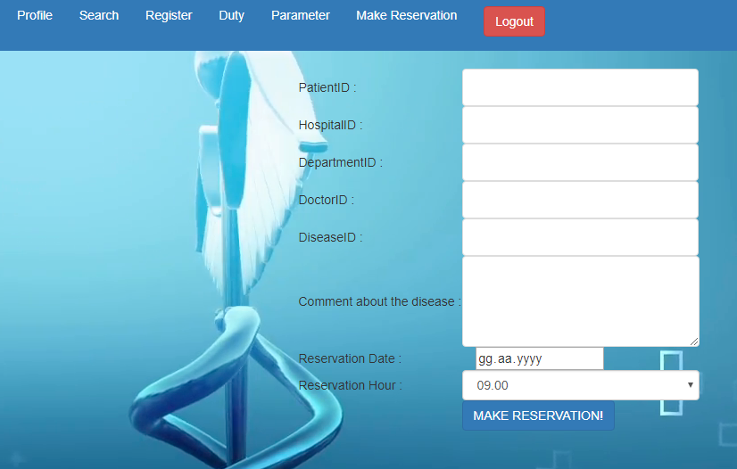
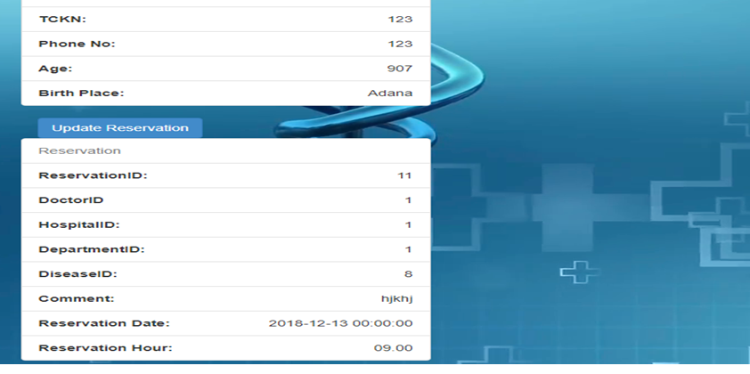
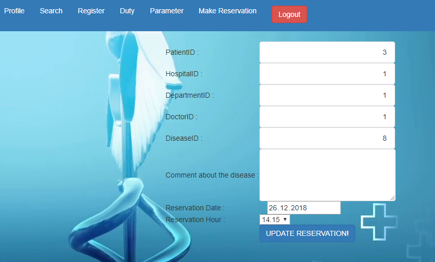

3.2. Parts Done By Bilal Can¶
3.2.3. Reservation Processes¶
| 1) Making a Reservation: | |
|---|---|
It can be done by the patient or a personnel can do it on behalf of a patient.

| 2) How can see a Reservation: | |
|---|---|
Each patient can see their reservations under their profile page. If they have no reservation registered on the system, this area is empty.

| 3) Updating a Reservation: | |
|---|---|
In the profile page, the patient can click “update reservation” button to open a new page to update reservation information.
